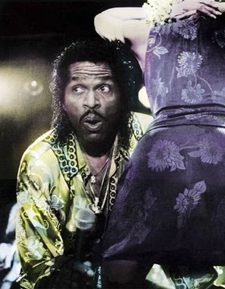
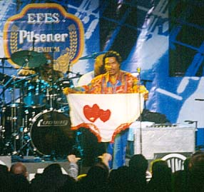
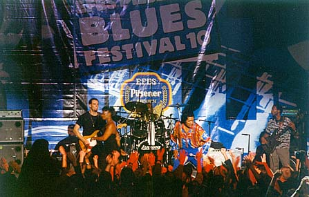

| Разговор с Бобби Рашем начался с
того, что я сказал, как "горяч" был
его концерт в Нутоддене… То, что вы видели в Норвегии, вы увидите и здесь, только горячее. Это будет великолепный концерт! Со мной моя группа, и девочки со мной. Это будет энергичный концерт. Я старый человек, но энергии у меня много. Я делаю это 48 лет. Я начал, когда мне было 6 месяцев отроду. Шучу. Но я не стесняюсь сказать, что мне 64 года, я давно записываюсь, у меня 185 пластинок. Более сорока компакт-дисков и кассет, и что там еще. Но это мой первый приезд в Москву. И я приехал сюда, чтобы встряхнуться-кувырнуться-и-выпрыгнуть-молодцом. Мы собираемся играть блюз, и играть хорошо, мы сыграем в Бобби Раша. Чтобы, когда я уеду, тут долго помнили, что я побывал в этом городе |
 |
| Все мое шоу - ради веселья. У всех
свои проблемы. Но если вы приходите на
шоу Бобби Раша, вы забудете о своих
проблемах. Просто посмейтесь, выпейте
кока-колы, или что вас греет, - и давайте
веселиться. Вот для чего все это! Я здесь
сам и для дам и для мужиков, именно для
мужиков я вывожу на сцену дам, чтобы было
на что посмотреть… Ну, ты же видел этих
дам, а?… Ты уже понял… АЕ: Да, у вас хороший вкус на женщин. БР: Да, это он - хороший вкус |
My whole show is having fun. Everybody got problem. But if
you come to the Bobby Rush show you forget about your problem. Just laugh
and have a Coca-Cola, or what have you, and let's have fun. That's what it
about. I got myself there for the ladies and the mans, I got the ladies
there just for the mans. To look at… Well, you saw the ladies, aaa? -
you know… ---You have a good taste for ladies That's good taste |
|
 |
|
| И еще - со мной в представлении
участвуют Эдди Клиаватер и Крис Кинг.
Они оба очень хороши. Они сверхпопулярны.
Я могу только радоваться, что я рядом с
такими парнями. Мы с Клиаватером друзья
уже лет 25 или 40. Оба давно на сцене…
Встретились в Чикаго давным-давно…
Так что здесь мне очень весело. Я хочу возвращаться сюда вновь и вновь. Так что, если вы меня видели раньше, увидите снова не хуже и даже лучше. |
And another thing - Eddy Clearwater and Chris Show are with me on the show with me. They both are very good. They are superstars. And I'm just glad to be around guys like that. Clearwater and myself, we are friends for about 35 or 40 yeas. Been around for a long time. Out of Chicago for long long time. So here I'm having fun. I want to be back again and again. So if you saw me you gonna see a thing and even better. |
| Крис Кинг из Нового Орлеана, Луизиана. Я думаю, что Клиаватер родом из Алабамы. Но я познакомился с ним в Чикаго, лет 35-40 назад. Он отличный артист, гитарист. Он очень хороший друг. И мы много собираемся вместе переделать. Так что - будет так, как и должно быть. | Chris King is from New Orleans, Louisiana. I believe that Clearwater is out of Alabama as a child. But I met him in Chicago. A 35 or 40 years ago. He is a great entertainer, a guitar player. He is a fine friend. And we gonna do a lot of things together. So what you expect is what you get |
| Покойный Мадди Уотерс бывалочи говорил, когда был жив, он говорил: "Я старый человек, но одеваюсь по молодежной моде". Я, может быть, старею. Но я веду себя как молодой… Так мне лучше. Кстати, поздравляю тебя - 12 лет на радио… | The late Muddy Water used to say before he passed. He said I'm an old man but I got young fashion way. I maybe getting old. But I have young fashion way. So I feel good. So congratulation to you for 12 years in radio. …. |
| Бывает, моя группа работает по два-три с половиной часа. Клавишник Мелвин Хендрикс со мной уже лет восемнадцать. Барабанщик со мной около 20 лет. Гитарист со мной - около 10 лет. Они со мной уже давно. Мы добрые друзья. Мы играем добрую (хорошую) музыку. Мне очень повезло, что я работаю с ними. В США я очень-очень известный артист. Я благодарен небу за это. Теперь, думаю, если я буду достаточно много работать здесь, я и в вашей стране стану очень известным артистом. | Sometime my band work 2,5 3,5 hours. The keyboard player Melvin Hendrix is with me for about 18 years. The drummer is with me for about 20 years. The guitar player been with me for about 10 years. They been with me for a long time. We are good friends. We play good music. I been blessed to work with them. In US I'm a big big artist and I thank god for that. Now if I work long enough here I'll bee big artist in this country. |
| Позвольте мне сказать вам, и тебе в особенности, и всем, кто принимает участие, всем теле- и радио-ведущим - позвольте мне поблагодарить вас за то, что вы делаете. Я хочу поблагодарить вас за то, что вы поддерживаете блюзовую жизнь. Делайте то, что делаете, и спасибо, что записываете мое интервью. | Let me say to you, special to you and everybody who's involved, all the writers, all the TV personalities, the radio personalities - let me thank you for what you do. Let me thank TV hosts, and the radiostations - we call them DJ's in US, or personalities. I wanna thank you for keeping the blues alive. Do what you do and thank you for interviewing me. |
| Меня спрашивали, почему я меняю костюмы по ходу представления. Перемена костюмов появилась во времена, когда я работал комиком. Как это было? Один парень нанял меня руководителем оркестра. И еще ему нужен был ведущий программы (конферансье). Но (однажды на гастроли) ведущий не мог поехать. Ведущему платили 50$, а мне платили 40$ за вечер. Ну, я отправился к старьевщику, купил себе накладные усы и приклеил их, и купил костюм большого размера. И, одетый в этот костюм, который был мне велик, я выходил и шутил, как завзятый комик, я рассказывал всякие анекдоты, а люди смеялись и хлопали. И я уходил за кулисы и говорил: "Теперь - выступление звезды. Теперь - Бобби Раш. Срывал усы, приглаживал волосы, скидывал костюм, возвращался на сцену и начинал шоу Бобби Раша. Так что я получал 50$ за Бродягу (сценическое имя комика) и 40$ за Бобби Раша. И никто даже не догадывался, что я был и тем и другим. Вот с той поры и пошло. | Someone asked me why do I change closes in the mix of my show. The change of closes came by because I was a comedian. What happened in that situation, A guy hired me as a bandleader. Then he wanted an MC. That MC he couldnot come. I said Oh my God, what I'm gonna do? The MC won't come. He was paying MC 50$ a night, and paying me 40$ a night. So I went to a good Will store, bought me mustache and stack 'em on, and a big suit. And dressed in that big suit I'll come out and joke like a stand out comedian, I was telling those jokes and people were laughing' and clap. And I will go behind the curtain and say "Ladies and gentlemen now it's star time. It's time for Bobby Rush. Pull the mustache off, pat my hair off, put the suit off, come back out on stage and do the Bobby Rush. So I was getting 50$ for Tramp, 40 $ for Bobby Rush. And nobody never knew I was the same person. That's how it came about. So now when you see my show I change my clothes a whole bit just like I did. That's how it came by. |
| Все меня так тепло встречают в Москве. Я хочу поблагодарить Москву. Спасибо ТВ, что меня позвали. Спасибо всем, кто в этом участвует. Спасибо, спасибо, спасибо. | Everybody welcome me so warmly here in Moscow. I wanna thank Moscow Thank the TV show for having me on, thank all the people involved. Thank thank thank you |
 |
|
Бывшие новости |
Январь-Февраль 1999 |
Март 1999 |
Ноябрь-Декабрь 1999
Январь 2000 |
Февраль 2000 |
Март 2000 |
Апрель 2000